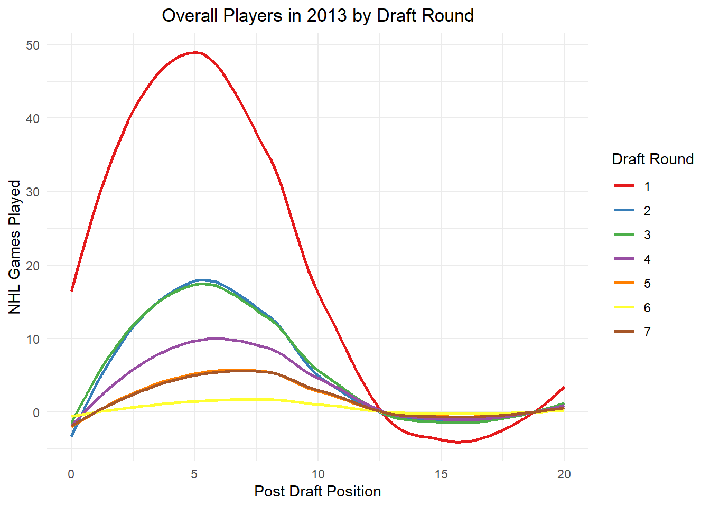
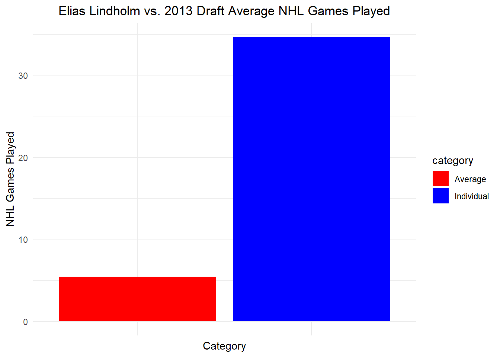

In this assignment, we are going to practice creating visualizations for tabular data. Unlike previous assignments, however, this time we will all be using the same data sets. I’m doing this because I want everyone to engage in the same logic process and have the same design objectives in mind.
LEARNING OBJECTIVES
Demonstrate that you can manipulate tabular data to facilitate different visualization tasks. The minimum skills are FILTERING, SELECTING, and SUMMARIZING, all while GROUPING these operations as dictated by your data.
Demonstrate that you can use tabular data to explore, analyze, and choose the most appropriate visualization idioms given a specific motivating question.
Demonstrate that you can Find, Access, and Integrate additional data in order to fully address the motivating question.
The scenario below will allow you to complete the assignment. It deals with data that are of the appropriate complexity and extent (number of observations and variables) to challenge you. If you want to use different data (yours or from another source) I am happy to work with you to make that happen!
SCENARIO
Imagine you are a high priced data science consultant. One of your good friends, Cassandra Canuck, is an Assistant General Manager for the Vancouver Canucks, a team in the National Hockey League with a long, long…. long history of futility.
This season feels different.
The Canucks are currently among the league leaders and appear to be on their way to their first playoff appearance in many years. A few weeks ago, the Vancouver Canucks decided to trade an underperforming player with a high upside and their first round draft pick to the Calgary Flames for Elias Lindholm, a very solid forward that might prove to be the missing piece of their Stanley Cup puzzle. Exciting!
Except that now the Canucks are struggling. They’ve lost 4 straight games and have seemingly lost their identity as a team. The fans are questioning whether the trade was worth it. Woe is me!
For the purposes of this exercise, let’s set the 2024 NHL draft order using the Tankathon Simulator. The NHL uses a lottery system in which the teams lowest in the standings have the highest odds of getting the first overall pick. This year the Canucks are at the top of the league, and positioned to have the 31st overall pick. According to the simulator, Calgary will pick at number 2 (which is very valuable!), and the Canuck’s pick at 31.
Here is a screenshot:
Here is the question:
Was the trade worth it? This trade has a high likelihood of becoming what we call a rental. Elias Lindholm is on an expiring contract, meaning Vancouver is guaranteed to hold his contract only through the end of the season. They might be able to extend him, but that depends on the salary cap.
Meanwhile, Calgary can draft a player at position 31, who may or may not turn out to be of equal or greater value than Lindholm.
Was the trade worth it? Did Vancouver or Calgary “win” the trade?
Can we make some visualizations that help us answer this question?
Create a new post in your portfolio for this assignment. Call it something cool, like NHL draft analysis, or Hockey Analytics, or John Wick….
Copy the data files from the repository, and maybe also the .qmd file.
Use the .qmd file as the backbone of your assignment, changing the code and the markdown text as you go.
THE DATA
How can we evaluate whether trading a first round pick for a rental player is a good idea? One approach is to look at the historical performance of players from various draft positions.
I’ve created a data set that will allow us to explore player performance as a function of draft position. If you are curious as to how I obtained and re-arranged these data, you can check out that tutorial here. For this assignment, though, I want to focus on the visualizations.
Calendar year in which the player was drafted into the NHL.
name
Item
Full name of the player.
round
Ordinal
Round in which the player was drafted (1 to 7).
overall
Ordinal
Overall draft position of the player (1 to 224)
pickinRound
Ordinal
Position in which the player was drafted in their round (1 to 32).
height
Quantitative
Player height in inches.
weight
Quantitative
Player weight in pounds.
position
Categorical
Player position (Forward, Defense, Goaltender)
playerId
Item
Unique ID (key) assigned to each player.
postdraft
Ordinal
Number of seasons since being drafted (0 to 20).
NHLgames
Quantitative
Number of games played in the NHL in that particular season (regular season is 82 games, playoffs are up to 28 more).
In this case, we have a dataframe with all the drafted players from 2000-2018, their position, their draft year and position, and then rows for each season since being drafted (postdraft). The key variable here is NHLgames, which tells us how many games they played in the NHL each season since being drafted. Whether drafted players even make the NHL, and how many games they play, might be a good proxy to understand the value of a draft pick we just traded away.
HINT
In the GitHub repository there is a file called NHLdraftstats.csv. What’s in there? Can we use that information?
`geom_smooth()` using method = 'loess' and formula = 'y ~ x'

Labelling. Can we create a solid figure caption and better axis labels for this figure? In your caption, please specify the task(s) the visualizaiton is intended to facilitate, as well as the marks, channels, and key-value pairs used.
`geom_smooth()` using method = 'loess' and formula = 'y ~ x'
Labelling. Can we create a solid figure caption and better axis labels for this figure? In your caption, please specify the task(s) the visualizaiton is intended to facilitate, as well as the marks, channels, and key-value pairs used.
Code
players_stats_2013 <- NHLdraftstats %>%filter(draftyear ==2013)library(dplyr)library(ggplot2)# Calculate the average NHL games played by players other than Elias Lindholmaverage_games <- players_stats_2013 %>%filter(name !="Elias Lindholm") %>%summarise(average_NHL_games =mean(NHLgames, na.rm =TRUE))# Calculate Elias Lindholm's average NHL gameselias_avg_games <- players_stats_2013 %>%filter(name =="Elias Lindholm") %>%summarise(NHLgames =mean(NHLgames, na.rm =TRUE)) %>%mutate(name ="Elias Lindholm", category ="Individual")# Create a data frame for the draft averageaverage_df <-data.frame(name ="2013 Draft Average",NHLgames = average_games$average_NHL_games,category ="Average")# Ensure both data frames have the same structure and combine themcomparison_data <-rbind(elias_avg_games, average_df)# Create the bar graph comparing Elias Lindholm's NHL games played to the 2013 draft averageggplot(comparison_data, aes(x = name, y = NHLgames, fill = category)) +geom_col() +theme_minimal() +ggtitle("Elias Lindholm vs. 2013 Draft Average NHL Games Played") +xlab("Category") +ylab("NHL Games Played") +scale_fill_manual(values =c("Average"="red", "Individual"="blue")) +theme(plot.title =element_text(hjust =0.5), axis.text.x =element_blank())
Labelling. Can we create a solid figure caption and better axis labels for this figure? In your caption, please specify the task(s) the visualizaiton is intended to facilitate, as well as the marks, channels, and key-value pairs used.
Code
forwards_2013 <- players_stats_2013 %>%filter(draftyear ==2013, position =="Forward") %>%select(name, position, NHLgames) library(dplyr)# Mark Elias Lindholm and other playersplayers_stats_2013 <- players_stats_2013 %>%mutate(Category =ifelse(name =="Elias Lindholm", "Elias Lindholm", "Other Players"))# Calculate average NHL games for Elias and other playersavg_games_comparison <- players_stats_2013 %>%group_by(Category) %>%summarise(AverageNHLGames =mean(NHLgames, na.rm =TRUE))# Plotggplot(avg_games_comparison, aes(x = Category, y = AverageNHLGames, fill = Category)) +geom_col() +theme_minimal() +ggtitle("Average NHL Games: Elias Lindholm vs Other Forwards (2013 Draft)") +xlab("") +# Remove x-axis label as Category is self-explanatoryylab("Average NHL Games Played") +scale_fill_manual(values =c("Elias Lindholm"="blue", "Other Players"="red"))

Labelling. Can we create a solid figure caption and better axis labels for this figure? In your caption, please specify the task(s) the visualizaiton is intended to facilitate, as well as the marks, channels, and key-value pairs used.
Do these visualizations change as a function of player position?
Is the number of NHL games played really the best metric to use? What might picks in the range of pick 31 conceivably yield? How often do picks in that range yield players of Elias Lindholm’s value?
I guess we’d better figure out what Elias Lindholm brings to the table.
Can you find him in our existing data? Can you think of a way to highlight him in the context of number of games played? What other kinds of data might we need to fairly evaluate Lindholm and pick 31?
CONCLUSION
Based on your visualizations, what would you advise regarding this trade proposal? Why?
Source Code
---title: "Hockey Analytics"subtitle: "Visualizations for Tabular Data"author: "Geraline Trossi-Torres"date: "2024-02-29"categories: [Assignment, DataViz, Visualization]image: "Profile3.jpg"code-fold: truecode-tools: truedescription: "2024 NHL Draft Picks"---## OVERVIEWIn this assignment, we are going to practice creating visualizations for tabular data. Unlike previous assignments, however, this time we will all be using the same data sets. I'm doing this because I want everyone to engage in the same logic process and have the same design objectives in mind.## LEARNING OBJECTIVES1. Demonstrate that you can manipulate tabular data to facilitate different visualization tasks. The minimum skills are FILTERING, SELECTING, and SUMMARIZING, all while GROUPING these operations as dictated by your data.2. Demonstrate that you can use tabular data to explore, analyze, and choose the most appropriate visualization idioms given a specific motivating question.3. Demonstrate that you can Find, Access, and Integrate additional data in order to fully address the motivating question.The scenario below will allow you to complete the assignment. It deals with data that are of the appropriate complexity and extent (number of observations and variables) to challenge you. If you want to use different data (yours or from another source) I am happy to work with you to make that happen!## SCENARIOImagine you are a high priced data science consultant. One of your good friends, Cassandra Canuck, is an Assistant General Manager for the Vancouver Canucks, a team in the National Hockey League with a long, long.... long history of futility.This season feels different.The Canucks are currently among the league leaders and appear to be on their way to their first playoff appearance in many years. A few weeks ago, the Vancouver Canucks decided to trade an underperforming player with a high upside and their first round draft pick to the Calgary Flames for Elias Lindholm, a very solid forward that might prove to be the missing piece of their Stanley Cup puzzle. Exciting!Except that now the Canucks are struggling. They've lost 4 straight games and have seemingly lost their identity as a team. The fans are questioning whether the trade was worth it. Woe is me!For the purposes of this exercise, let's set the 2024 NHL draft order using the [Tankathon Simulator](https://www.tankathon.com/nhl). The NHL uses a lottery system in which the teams lowest in the standings have the highest odds of getting the first overall pick. This year the Canucks are at the top of the league, and positioned to have the 31st overall pick. According to the simulator, Calgary will pick at number 2 (which is very valuable!), and the Canuck's pick at 31.Here is a screenshot:### Here is the question:Was the trade worth it? This trade has a high likelihood of becoming what we call a **rental**. Elias Lindholm is on an expiring contract, meaning Vancouver is guaranteed to hold his contract only through the end of the season. They might be able to extend him, but that depends on the salary cap.Meanwhile, Calgary can draft a player at position 31, who may or may not turn out to be of equal or greater value than Lindholm.Was the trade worth it? Did Vancouver or Calgary "win" the trade?Can we make some visualizations that help us answer this question?[Here is an article](https://puckpedia.com/PerriPickValue) on modeling draft pick value[Eric Tulsky's original paper\*](https://www.broadstreethockey.com/post/nhl-draft-pick-value-trading-up/)## DIRECTIONSCreate a new post in your portfolio for this assignment. Call it something cool, like NHL draft analysis, or Hockey Analytics, or John Wick....Copy the data files from the repository, and maybe also the .qmd file.Use the .qmd file as the backbone of your assignment, changing the code and the markdown text as you go.## THE DATAHow can we evaluate whether trading a first round pick for a rental player is a good idea? One approach is to look at the historical performance of players from various draft positions.I've created a data set that will allow us to explore player performance as a function of draft position. If you are curious as to how I obtained and re-arranged these data, you can check out that tutorial [here](../T6-APIsandJSON/index.qmd). For this assignment, though, I want to focus on the visualizations.```{r include=FALSE}library(tidyverse)library(dplyr)library(ggplot2)library(readxl)``````{r}NHLDraft<-read.csv("NHLDraft.csv")NHLDictionary<-read_excel("NHLDictionary.xlsx")knitr::kable(NHLDictionary)```In this case, we have a dataframe with all the drafted players from 2000-2018, their position, their draft year and position, and then rows for each season since being drafted (`postdraft`). The key variable here is `NHLgames`, which tells us how many games they played in the NHL each season since being drafted. Whether drafted players even make the NHL, and how many games they play, might be a good proxy to understand the value of a draft pick we just traded away.::: callout-note## HINTIn the GitHub repository there is a file called `NHLdraftstats.csv`. What's in there? Can we use that information?:::## ANALYTICS REGARDING IF THE TRADE WAS WORTH IT```{r}library(dplyr)library(ggplot2)NHLdraftstats <-read.csv("NHLdraftstats.csv")Elias_stats <- NHLdraftstats %>%filter(name =="Elias Lindholm")ggplot(Elias_stats, aes(x=postdraft, y=NHLgames)) +geom_smooth() +theme_minimal() +ggtitle("Elias Lindholm Performance") +xlab("Post Draft Position") +ylab("NHL Games Played") +theme(plot.title =element_text(hjust =0.5))```**Labelling.** Can we create a solid figure caption and better axis labels for this figure? In your caption, please specify the task(s) the visualizaiton is intended to facilitate, as well as the marks, channels, and key-value pairs used.```{r}library(dplyr)players_stats_2013_2 <- NHLdraftstats %>%filter(draftyear ==2013) %>%filter(name !="Elias Lindholm")ggplot(players_stats_2013_2, aes(x=postdraft, y=NHLgames, color=as.factor(round))) +geom_smooth(se=FALSE) +theme_minimal() +ggtitle("Overall Players in 2013 by Draft Round") +xlab("Post Draft Position") +ylab("NHL Games Played") +theme(plot.title =element_text(hjust =0.5)) +scale_color_brewer(palette="Set1", name="Draft Round")```**Labelling.** Can we create a solid figure caption and better axis labels for this figure? In your caption, please specify the task(s) the visualizaiton is intended to facilitate, as well as the marks, channels, and key-value pairs used.```{r}players_stats_2013 <- NHLdraftstats %>%filter(draftyear ==2013)library(dplyr)library(ggplot2)# Calculate the average NHL games played by players other than Elias Lindholmaverage_games <- players_stats_2013 %>%filter(name !="Elias Lindholm") %>%summarise(average_NHL_games =mean(NHLgames, na.rm =TRUE))# Calculate Elias Lindholm's average NHL gameselias_avg_games <- players_stats_2013 %>%filter(name =="Elias Lindholm") %>%summarise(NHLgames =mean(NHLgames, na.rm =TRUE)) %>%mutate(name ="Elias Lindholm", category ="Individual")# Create a data frame for the draft averageaverage_df <-data.frame(name ="2013 Draft Average",NHLgames = average_games$average_NHL_games,category ="Average")# Ensure both data frames have the same structure and combine themcomparison_data <-rbind(elias_avg_games, average_df)# Create the bar graph comparing Elias Lindholm's NHL games played to the 2013 draft averageggplot(comparison_data, aes(x = name, y = NHLgames, fill = category)) +geom_col() +theme_minimal() +ggtitle("Elias Lindholm vs. 2013 Draft Average NHL Games Played") +xlab("Category") +ylab("NHL Games Played") +scale_fill_manual(values =c("Average"="red", "Individual"="blue")) +theme(plot.title =element_text(hjust =0.5), axis.text.x =element_blank())```**Labelling.** Can we create a solid figure caption and better axis labels for this figure? In your caption, please specify the task(s) the visualizaiton is intended to facilitate, as well as the marks, channels, and key-value pairs used.```{r}forwards_2013 <- players_stats_2013 %>%filter(draftyear ==2013, position =="Forward") %>%select(name, position, NHLgames) library(dplyr)# Mark Elias Lindholm and other playersplayers_stats_2013 <- players_stats_2013 %>%mutate(Category =ifelse(name =="Elias Lindholm", "Elias Lindholm", "Other Players"))# Calculate average NHL games for Elias and other playersavg_games_comparison <- players_stats_2013 %>%group_by(Category) %>%summarise(AverageNHLGames =mean(NHLgames, na.rm =TRUE))# Plotggplot(avg_games_comparison, aes(x = Category, y = AverageNHLGames, fill = Category)) +geom_col() +theme_minimal() +ggtitle("Average NHL Games: Elias Lindholm vs Other Forwards (2013 Draft)") +xlab("") +# Remove x-axis label as Category is self-explanatoryylab("Average NHL Games Played") +scale_fill_manual(values =c("Elias Lindholm"="blue", "Other Players"="red"))```**Labelling.** Can we create a solid figure caption and better axis labels for this figure? In your caption, please specify the task(s) the visualizaiton is intended to facilitate, as well as the marks, channels, and key-value pairs used.1. Do these visualizations change as a function of player position?2. Is the number of NHL games played really the best metric to use?What might picks in the range of pick 31 conceivably yield? How often do picks in that range yield players of Elias Lindholm's value?I guess we'd better figure out what Elias Lindholm brings to the table.Can you find him in our existing data? Can you think of a way to highlight him in the context of number of games played? What other kinds of data might we need to fairly evaluate Lindholm and pick 31?## CONCLUSIONBased on your visualizations, what would you advise regarding this trade proposal? Why?